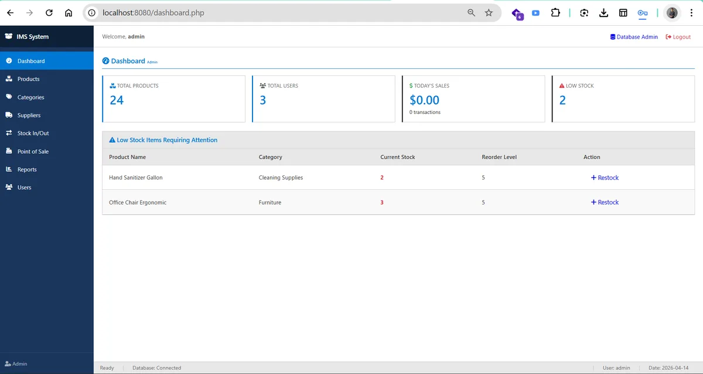
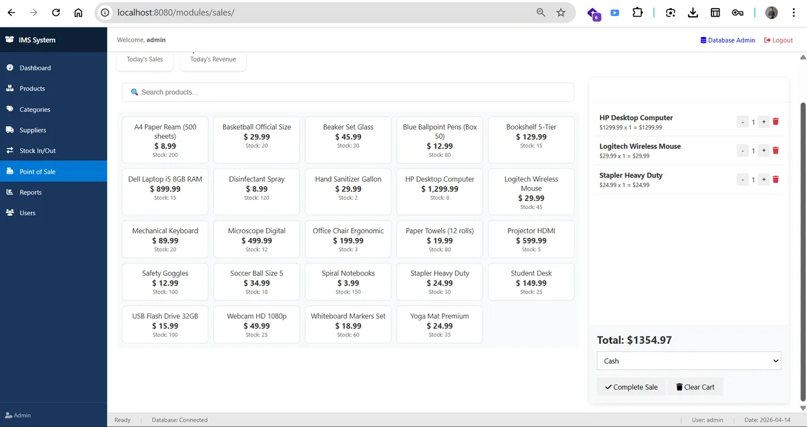
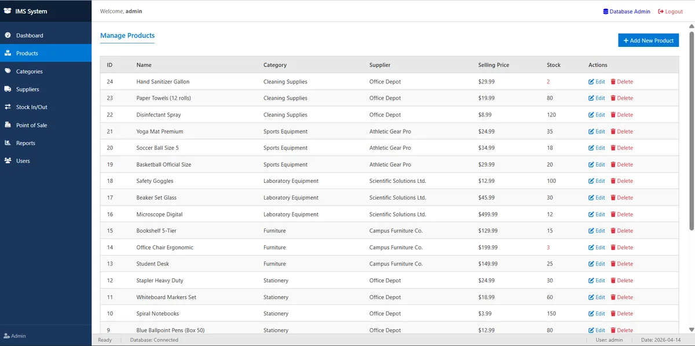
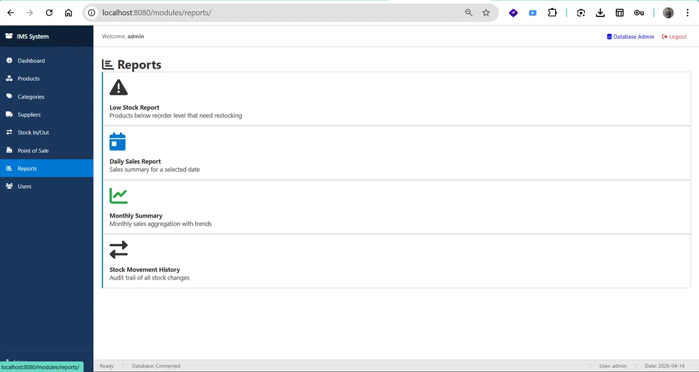
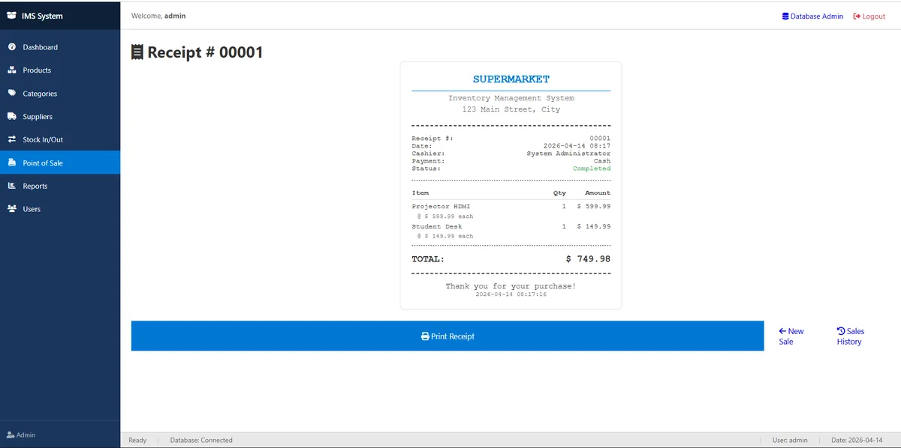

POS and Inventory Management System
A supermarket point of sale and stock system in PHP, MySQL and Docker, built as my NVQ Level 5 portfolio project.
- PHP 8.2
- MySQL 8
- Docker
- Bootstrap 5
- RoleSole developer
- ContextNDICT (NVQ Level 5) portfolio project
- StackPHP 8.2, MySQL 8, Docker
- RolesAdmin, Inventory Manager, Cashier

What I built
A web-based Point of Sale (POS) and Inventory Management System for a small, single-branch supermarket. I built it as my NVQ Level 5 (NDICT) software development portfolio project, to show the full lifecycle: requirements, design, a normalised database, role-based access, testing and deployment.
Features


- Session-based login with bcrypt password hashing.
- Stock control: stock IN and OUT transactions with a full audit trail.
- Point of sale with a cart and a printable receipt.
- Reports: low stock, daily sales and stock movement history, each with a print view.
| Role | What they do |
|---|---|
| Admin | Full access: all modules, user management and reports |
| Inventory Manager | Manages stock, products and suppliers; views reports |
| Cashier | Processes sales at the POS; read-only on inventory |
Reports and receipts


How it is built
Three Docker containers share one network: web (PHP 8.2 with Apache), mysql (MySQL 8.0 with a volume so data survives restarts) and pma (phpMyAdmin). The code is split into modules for products, categories, suppliers, transactions, sales, reports and users, with shared pieces for the database connection, access control and audit logging. One schema.sql is the source of truth for the database.
| Layer | Technology |
|---|---|
| Backend | PHP 8.2 |
| Database | MySQL 8.0 |
| Frontend | Bootstrap 5, Chart.js |
| Auth | PHP sessions and bcrypt |
| Deployment | Docker and Docker Compose |
What it demonstrates
- The software development lifecycle using the V-Model.
- A database designed to third normal form (3NF).
- CRUD operations behind role-based access control.
- SOLID principles applied practically.
- Unit, integration, system and user acceptance testing.
- Containerised deployment with Docker.
Run it yourself
With Docker installed:
git clone https://github.com/HomemadeICT/NVQ-Level-5-POS-IMS.git
cd NVQ-Level-5-POS-IMS
docker-compose up -dThen open http://localhost:8080. The repository includes twelve documentation chapters, from requirements and database design to testing and a user manual.